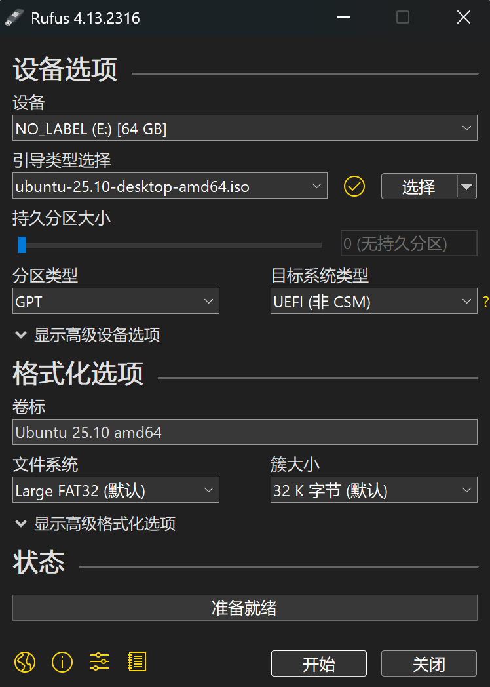

准备工作 #
下载过程 #
- 下载并打开Rufus。
- 插入空的USB盘，我的是50GB。制作过程会格式化 U 盘，确保里面没有重要文件。
- 打开 Rufus，按以下设置：
- 设备：选择 U 盘
- 引导类型选择：点击"选择"，找到下载的 Ubuntu ISO 文件
- 分区类型：GPT（较新电脑）或 MBR（老电脑）。我选择的是GPT。
- 其他选项保持默认
- 点击"开始"，等待写入完成（约 5-10 分钟）

- 在Windows中压缩卷分配内存空间：
由于我个人的电脑的d盘有700GB，内存仍然十分充裕，所以选择将其进行分区，也就是划分出来一部分空闲内存给即将要安装的操作系统使用。具体的操作办法是：
- 右键点击"此电脑" → “管理” → “磁盘管理”
- 找到 D 盘，右键点击 → “压缩卷”
- 输入你想分配给 Ubuntu 的空间大小（我选择了35GB = 35840MB，建议至少30GB）
- 点击"压缩"，会出现一块"未分配"的黑色区域，并保持未分配状态

- 进入BIOS从USB启动
重启电脑，在开机时反复按启动热键（这个因电脑品牌不同有差别，可自行搜索，我的是机械革命，按f10）。

选择第一个UEFI开头的启动设备，这个就是刚刚插入的U盘。接着就是进行Ubuntu的安装和配置了，在出现下图之前是不需要操作的。

接下来就是正常的配置，选择语言、时区、设置用户名密码等常规选项，其中有一项需要特别选择，在disk setup中选择manual installation，在下一步中就可以选择刚刚压缩出来的空闲空间进行分区了，为了方便起见，我直接为根分区/设置了35GB的空间。


最后点击下载ubuntu而不是体验，就到达最后安装的流程了，需要等待一小段时间。

- 完成
这样每次在开启电脑的时候，默认会进入原先的Windows系统，但是可以按启动热键，选择进入Ubuntu系统。
额外知识补充 #
计算机是如何启动的？ #
此处参考来源：https://www.ruanyifeng.com/blog/2013/02/booting.html
当我们按下电源键的那一刻，计算机不会直接立即进入操作系统（比如我们刚刚下载的Linux），而是要经历一系列严格定义的步骤。
一、从加电到固件启动
可以用一句谚语来形容计算机的启动：
pull oneself up by one's bootstraps.字面意思是"拽着鞋带把自己拉起来"，也就是说，必须要先运行程序然后计算机才能启动，而计算机没有启动就无法运行程序，这看起来是一个很矛盾的过程。boot这个词也就来源于这句话。
但这个看似矛盾的问题，其实通过一种非常巧妙的设计被解决了：在计算机中，总有一小段程序是“先天存在”的。这段程序并不是在开机后加载的，而是在主板制造时就已经被写入到一个特殊的存储介质中——ROM（只读存储器，现代多为 Flash）。
计算机的主板上有一个ROM芯片，里面存储着BIOS/UEFI固件代码，在生产阶段，主板厂商会编写固件，使用烧录工具把固件写入ROM芯片，再将芯片焊接到主板上，这个过程就是刷入ROM。
当计算机通电后，CPU 会从一个固定地址开始执行指令（地址由硬件架构严格规定好）。这个地址通常映射到主板上的固件程序（也就是在ROM中已经写好了的固件程序）：
- 传统：BIOS（Basic Input/Output System）
- 现代：UEFI（Unified Extensible Firmware Interface）
这些固件的作用类似于“启动引导程序的引导程序”，也就是bootstraps。从CPU的角度来看，它只是做了很简单的事情：从某个地址取指令然后执行，再取下一条，但在硬件层面，这个地址会映射到固件的芯片中，从ROM中读取指令，再返回给CPU执行。
BIOS程序首先检查，计算机硬件能否满足运行的基本条件，这叫做"硬件自检"（Power-On Self-Test），缩写为POST。如果硬件出现问题，主板会发出不同含义的蜂鸣，启动中止。如果没有问题，屏幕就会显示出CPU、内存、硬盘等信息。
二、从固件到操作系统
固件并不会启动操作系统，而是会去找谁来启动操作系统，也就是去选择启动设备。固件需要知道"下一阶段的启动程序"具体存放在哪一个设备。BIOS需要有一个外部储存设备的排序，排在前面的设备就是优先转交控制权的设备。这种排序叫做"启动顺序"。（可以查看上面的图3）
固件会按照这个启动顺序，依次尝试设备。固件会加载该设备上的引导程序Bootloader（这里是简略的描述，具体请查看开头的参考来源）。常见的Linux引导程序是GNU-GRUB，其作用是提供系统选择菜单，并把控制器交给内核。
当控制器交给操作系统之后，内核会被首先加载进内存。
以Linux系统为例，先载入/boot目录下面的kernel。内核加载成功后，第一个运行的程序是/sbin/init。它根据配置文件（Debian系统是/etc/initab）产生init进程。这是Linux启动后的第一个进程，pid进程编号为1，其他进程都是它的后代。 然后，init线程加载系统的各个模块，比如窗口程序和网络程序，直至执行/bin/login程序，跳出登录界面，等待用户输入用户名和密码。
至此，全部启动过程完成。
为什么安装Linux需要一个U盘？ #
同样的，对于一个新的操作系统，我们可以找到其安装程序，但是该如何运行这个程序？我们电脑硬盘上没有Linux，也没有其Bootloader，也没有Linux内核，我们目前没有这个新的操作系统，那就没法运行安装器；没有安装器，也无法安装操作系统，那该怎么办？
解决办法其实很巧妙：借助一个“外部可启动设备”，先运行一个临时系统，而这个设备最常见的就是U盘。
我们在上面安装流程中用到了Rufus程序，其作用就是将一个普通的U盘转换成“可启动的安装介质”。一开始我们的U盘只是一个存储设备，没有启动能力，如果直接将下载的Linux的ISO文件复制进去是没法启动的。而Rufus会把.iso文件的内容按照特定格式写入U盘，这就是镜像写入；再根据选择的系统目标类型（上面选择的是UEFI）自动配置启动所需要的东西；还会配置相关的引导程序保证能正确加载Linux内核。
好了，在经过Rufus的洗礼后，现在U盘有三种关键信息：
- Bootloader：被固件加载，负责进一步加载Linux内核
- Kernel：也就是Linux内核
- Live System（临时文件系统）：这是一个精简版的Linux系统，可以直接运行，提供图形界面。
A live system usually means an operating system booted on a computer from a removable medium, such as a CD-ROM or USB stick, or from a network, ready to use without any installation on the usual drive (s), with auto-configuration done at run time (see Terms).
现在我们正在插着U盘，当开机进入BIOS界面时（上图3）会看到一个以UEFI开头的选项，选择这个选项时，实际上是让主板中的UEFI固件，从U盘的EFI分区中加载并执行一个.efi启动程序（通常是GRUB）。随后，这个启动程序会加载Linux内核，进入Live System，从而进行后续的安装。
在这个临时系统中安装Linux时，会创建分区、复制系统文件（从U盘复制到硬盘）、把Bootloader安装到硬盘上。这样，以后在启动的时候，进入BIOS界面就可以看到位于硬盘上的Linux引导程序了，就和Windows系统共存了。此后也就可以拔掉U盘了。U盘的作用，不是“存储安装文件”，而是“提供一个可以被启动的最小操作系统环境”。
总结一下，安装 Linux 之所以需要 U 盘，是因为计算机必须先运行一个操作系统，才能安装另一个操作系统（否则无法运行安装程序），而 U 盘正是这个“最初运行环境”的提供者（可以创建一个临时操作系统来完成本地安装流程）。
整个启动流程分层一下就是：
第0层：ROM（主板）
↓
第1层：UEFI / BIOS（固件）
↓
第2层：U盘 / 硬盘（启动介质）
↓
第3层：Bootloader（GRUB）
↓
第4层：操作系统（Linux）后续使用 #
体验起来最大的感受是：刷新率是真的高，达到了240赫兹，光标移动、页面打开都是相当丝滑。但是出现了一些莫名奇妙的问题：
屏幕亮度无法调节 #
使用brightnessctl命令，在命令行手动调整屏幕亮度。
中文输入法 #
参考文章：https://zhuanlan.zhihu.com/p/2014753678230308360
使用fcitx5.
在vscode中发现fcitx5无法使用 #
不要在App Center中下载Code，卸载掉去官网下载.deb并在本地sudo apt install xxxxxxxx.deb。
挂起后无法使用键盘 #
右上角电源选择Suspend，之后再唤醒即可。
连接不上蓝牙耳机 #
选择忘记该设备再重新配对，即可。
梯子 #
我有配置URL,一直使用的是clash,可以参考这里：https://github.com/nelvko/clash-for-linux-install